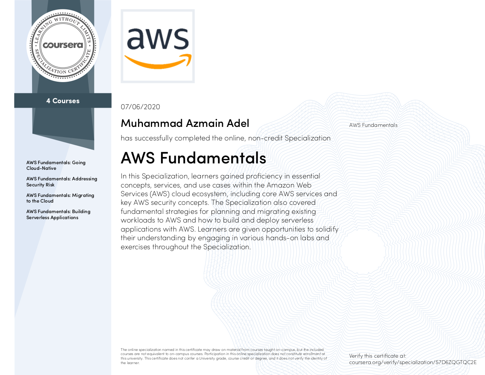

AWS Fundamentals Course
I recently completed the four-course AWS Fundamentals specialization on Coursera conducted by the AWS team. Beginners can start this one but some basic backend and system design knowledge are necessary.
Link to the course: AWS Fundamentals Specialization

Brief Introductions to the four courses:
Going Cloud Native:
This course will introduce you to AWS core services and infrastructure.
Topics: EC2, S3, VPC, Gateways, ELB, EFS, EBS, Lightsail, RDS, DynamoDB, Cloudwatch.
Addressing Security Risks:
This course will give you an overview of security best practices when developing and managing applications on AWS.
Topics: AWS Shared Responsibility Model, Security Hub GuardDuty, Secrets Manager, IAM.
Migrating to the Cloud:
This course focuses on analyzing your current environment, planning your migration, AWS services that are commonly used during a migration, and the actual migration steps. There are optional lab works but access to that is limited to paid enrolled students. Thanks to BUET I got a paid Coursera access.
Topics: DMS, Migration policies, Direct Connect, etc.
Building Serverless Applications:
This course will introduce you to the AWS serverless architecture. Through demonstrations and hands-on exercises you’ll learn skills by building and deploying a serverless website & a chat bot.
Topics: Lambda, API Gateway, Cloudfront, DynamoDB, Lex, Poly.